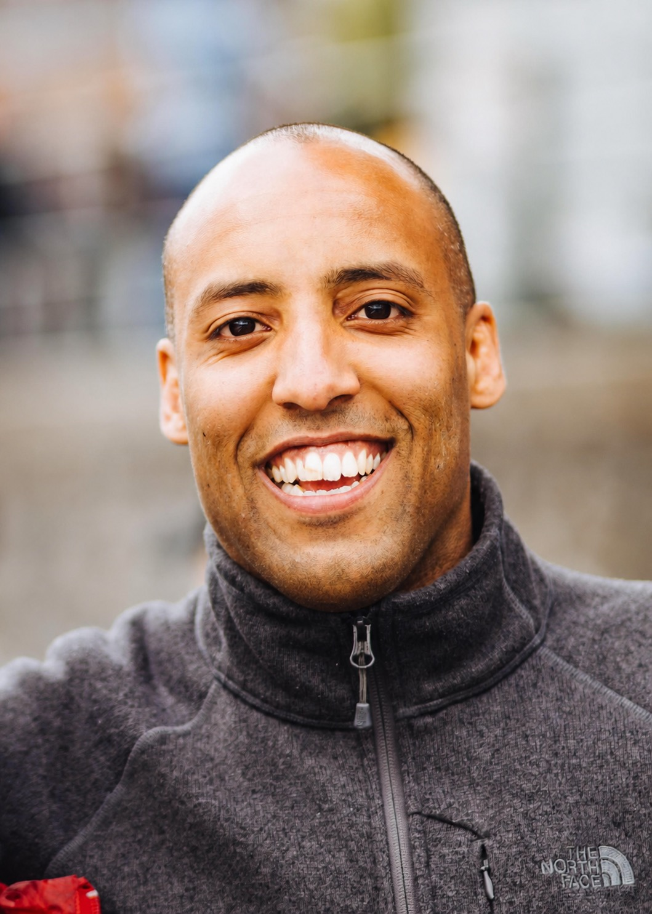

A lot of seemingly separate parts of my background suddenly came together.
I deliberately chose breadth, then went deep in mathematics, spent five years teaching, learned enterprise discovery at Qualtrics, and kept building in blockchain and quantum. When I found this role, that combination suddenly felt coherent.
MathematicsTeachingSales
MSc Mathematics · 5 years teaching · #1 outbound SDR

Thijs Mooren
02 / 08
Thijs Mooren × Classiq
Where I want to go from here.
You now have the short version of who I am. The rest is about how I got here, why this role genuinely interests me, what I already bring, and what I would still need to learn.
03 / 08
How I became who I am
Curiosity kept pulling me into new fields. Over time, I learned how to connect them.
Each step gave me something I would use here. The last step is why the role itself became so interesting to me.
04 / 08
Why this role
It felt familiar enough to recognise, and unfamiliar enough that there was still a lot to learn.
During Classiq’s Quantum Computing for Finance webinar, I recognised the mathematics: portfolio optimisation, option valuation, Monte Carlo, the optimisation problems underneath. At the same time, I saw how much sits between a classical formulation and a useful quantum application.
That combination is exactly what attracts me. It brings together continuous learning, interdisciplinary problem-solving, deep technical work and making complexity useful to someone else.
05 / 08
Why I fit
That is why I want the role. These are the three things I think I can already bring to it.
Those are the parts where I think I can already be useful · click for the evidence
06 / 08
Where I am not there yet
The question is not whether I have gaps. It is how quickly I can close the ones that matter.
I would rather be precise about what I do not know than pretend adjacent experience is the same thing.
07 / 08
My first ninety days
Learn → Apply → Own.
Days 01 to 30 · Learn
Learn the platform and the business around it.
Build in Qmod, work through the main demos and application patterns, refresh algorithms and hardware constraints, spend time with QSAs, product, engineering and sales, and shadow customer conversations. At the same time: learn which use cases resonate, who buys, why they buy and where deals get stuck.
Days 31 to 60 · Apply
Turn knowledge into pattern recognition.
Own parts of discovery, formulate customer problems mathematically, adapt examples in Qmod, co-run demos and collect recurring objections. Build a personal library: customer problem → formulation → quantum approach → Classiq pattern → commercial next step.
Days 61 to 90 · Own
Take a problem towards a credible next step.
Move from discovery through formulation and a Classiq implementation towards a technical or commercial next step. In parallel, leave behind one reusable asset: a PoC, demo, application template or pattern that other QSAs can use.
08 / 08
What I have already done
I was curious enough to start before the interview.
Research is useful to me when it turns into something I can test, build or use.
This is the kind of work I want to spend my time doing.